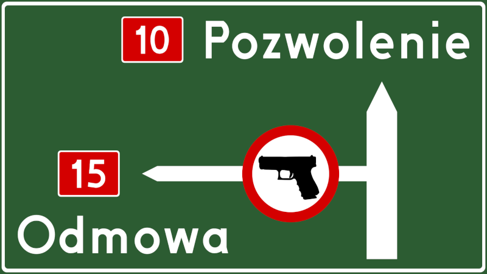

Kasandryczne wizje pełne różnych szaleńców oraz bandytów, swobodnie zaopatrujących się w broń palną, nie mają żadnego odzwierciedlenia w rzeczywistości. Oto dlaczego.
Ustawa o Broni i Amunicji wskazuje osoby, które bezwzględnie nie mogą otrzymać pozwolenia na broń. Aby nie znaleźć się w tym towarzystwie, musisz spełnić kilka prostych warunków. Jeżeli nie spełniasz choćby jednego z nich, to o własnej broni palnej możesz zapomnieć. Nie ma wówczas sensu podejmować próby uzyskania pozwolenia licząc na to, że a nuż się uda; w takiej sytuacji Komendant Wojewódzki Policji na pewno wyda (słuszną) decyzję odmowną. Oto podstawowe wymogi stojące przed kandydatem na posiadacza broni:
Tutaj nie ma nad czym deliberować. Broń palna jest wyłącznie dla osób dorosłych, a ponieważ osiemnastolatek to jeszcze dzieciak, to limit wieku jest taki sam jak dla zostania posłem na Sejm, czyli właśnie 21 lat. Jeśli jesteś młodszy, to twoje pozwolenie na broń musi poczekać.
Pozwolenie na broń do celów sportowych lub łowieckich może dostać także osiemnastolatek, jednak tylko na wniosek odpowiedniej organizacji, do której należy.
Potencjalny posiadacz broni palnej musi wykazywać się dobrym zdrowiem, zarówno fizycznym jak i psychicznym. Czekają cię dość szczegółowe badania lekarskie, podobne do tych jakie przechodzi kierowca autobusu lub taksówki. Badania te obejmują także konsultację psychiatryczną oraz testy psychologiczne. Zdrowie psychiczne oznacza również brak uzależnień. Jeśli zatem zbyt często zaglądasz do kieliszka lub zażywasz jakieś świństwa, to kompetentny lekarz szybko to wykryje i z pozwoleniem na broń możesz się pożegnać.
Jeśli jednak nie masz problemów z ciałem ani z głową, to badania przejdziesz na luzie, tak jak przechodzi je prawie każdy sześćdziesięcioletni taksówkarz. Musisz być ogólnie sprawny, ale to nie oznacza zdrowia kandydata na kosmonautę. Wada wzroku, płaskostopie, alergia lub nadciśnienie tętnicze - tego typu schorzenia nie stanowią najmniejszej przeszkody.
Stałe miejsce pobytu, czyli po ludzku: adres, pod którym mieszkasz. Nie należy - co jest niestety powszechnym błędem - mylić zamieszkania z zameldowaniem. Adres zameldowania nie ma żadnego znaczenia, nie musi też pokrywać się z adresem rzeczywistego zamieszkania (u sporej części Polaków się nie pokrywa). Nie ma też znaczenia, czy posiadasz na własność nieruchomość stanowiącą twój dach nad głową, czy też wynajmujesz mieszkanie lub nawet pokój. Nieistotne jest również, czy mieszkasz sam, z dziewczyną, ze współmałżonkiem i dziećmi, ze złotą rybką czy z rodzicami. Liczy się tylko to, czy pod danym adresem faktycznie na co dzień przebywasz.
Policja ma sposoby aby to sprawdzić, więc nie ma co ściemniać, bo prawda prędzej czy później wyjdzie na jaw. Zatem jeśli przez cały rok pracujesz na saksach, a do kraju wracasz tylko na święta, to masz miejsce stałego pobytu, tyle że nie w Polsce, a za granicą. W takiej sytuacji, o pozwoleniu na broń nie może być mowy.
Warto uprzedzić współlokatorów, kimkolwiek by dla ciebie byli, o swoich planach związanych z trzymaniem broni we wspólnym mieszkaniu.
Pozwolenie na broń przysługuje tylko obywatelom przestrzegającym prawa. Innymi słowy, musisz mieć status osoby niekaranej oraz wykazywać się nieposzlakowaną opinią. Jeśli zatem w rejestrze sądowym figurujesz jako:
to na mocy Ustawy o Broni i Amunicji, Komendant Wojewódzki Policji odmówi wydania ci pozwolenia na broń. Jak widzisz, upiecze ci się tylko w przypadku nieumyślnego przestępstwa skarbowego, przynajmniej teoretycznie.
Jeśli byłeś skazany przez sąd, ale twój wyrok uległ już zatarciu, to masz status osoby niekaranej. W praktyce jednak, Policja i tak bardzo często odmawia wydania pozwolenia na broń, powołując się na zatarte wyroki.
Czeka cię również policyjny wywiad środowiskowy. Oznacza to, że twój dzielnicowy złoży ci kurtuazyjną wizytę, aby sprawdzić czy stanowisz tak zwany element kryminogenny. Jeśli okaże się, że masz na koncie interwencje do awantur rodzinnych, byłeś notowany za dewastację śmietnika, zaś na podłodze twojego mieszkania walają się puste butelki po wódce, to twoje przyszłe pozwolenie na broń stoi pod dużym znakiem zapytania. Zdecydowanie lepiej jest, jeśli sąsiedzi cię lubią, a dzielnicowy cię nie kojarzy.
Co z mandatami otrzymanymi za różne wykroczenia drogowe? Nic! Mandat za wykroczenie nie czyni cię osobą skazaną za przestępstwo.
Zauważ proszę, że w treść wpisu wplotłem namiary na konkretne przepisy stanowiące podstawę prawną dla zamieszczonych informacji. Zachęcam cię do zapoznania się z nimi w wolnej chwili. Tym bardziej, że celowo upraszczam pewne kwestie, pomijam nieistotne szczegóły, a także nie wspominam o wyjątkach dotyczących tylko jednego promila ludzi. To konieczne, bo gdybym miał precyzyjnie omawiać każdy najmniejszy detal prawny, to w efekcie przepisywałbym swoimi słowami Ustawę o Broni i Amunicji, tracąc tym samym lekkostrawną formę tekstu. Pozostanę zatem wierny przyjętej konwencji.